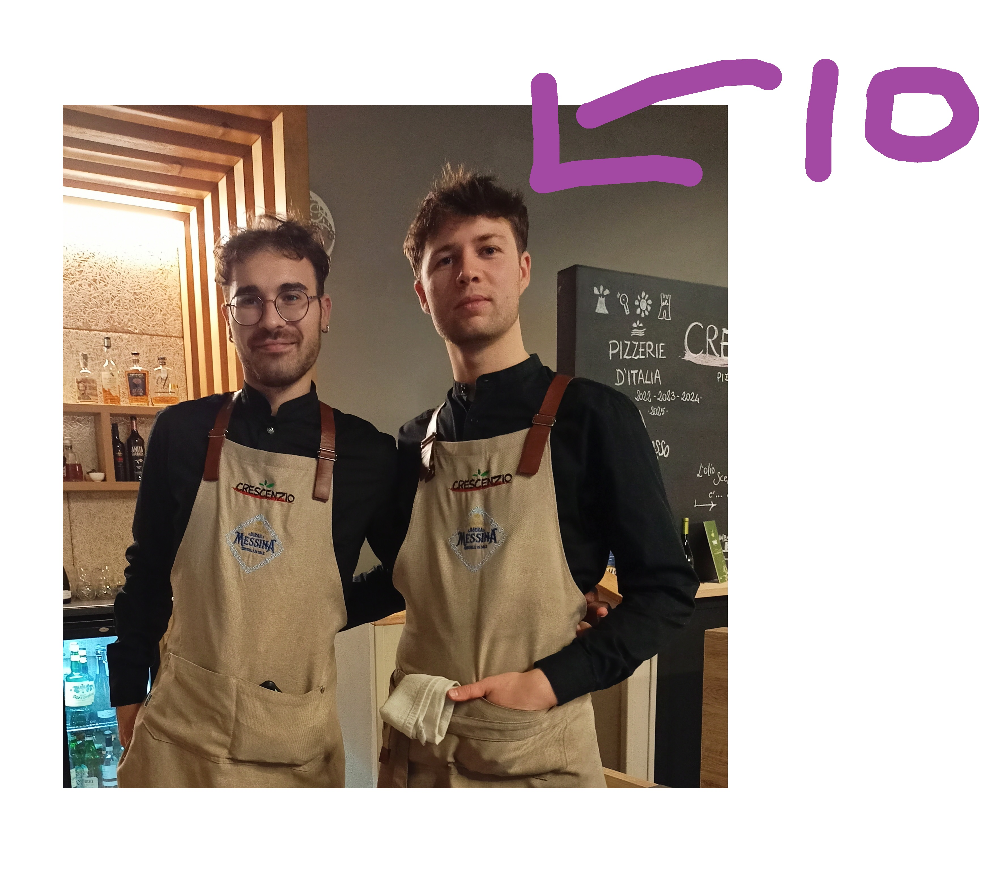

Il mio percorso professionale è iniziato come cameriere, una scelta
dettata dalla necessità di garantirmi un'entrata stabile.
Ho lavorato in molti locali e ammetto di essere diventato
anche piuttosto bravo.
Ho sempre avuto un'attenzione particolare per
l'estetica e un approccio meticoloso
nell'organizzare e sistemare ogni dettaglio visivo.
Questa inclinazione mi ha portato a cercare un ambito in cui poter
esprimere al meglio queste capacità. È così che ho scoperto il web
development, con una forte attrazione per il lato
front-end , dove la cura per i dettagli estetici si
unisce alla creatività e alla tecnologia.